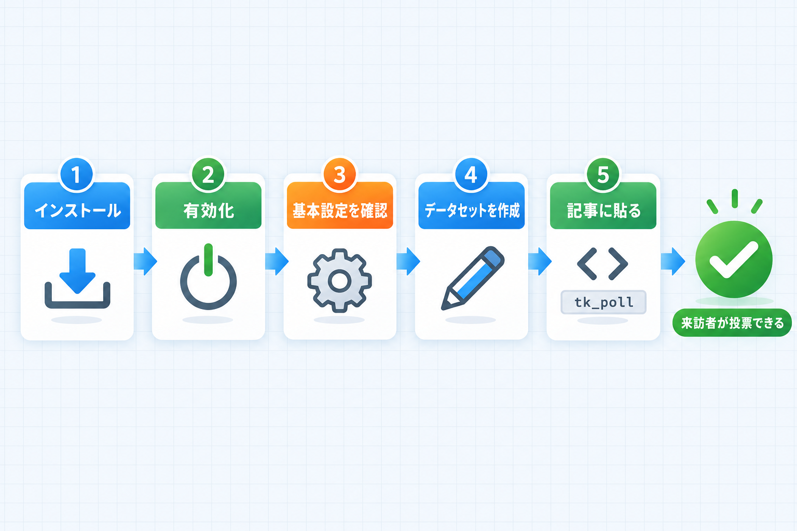

導入と最初の設定
プラグインをインストールしてから、最初の投票を記事に載せるまでの手順です。5つのステップで、来訪者が投票できる状態になります。

ステップ1: インストール
ZIP ファイルを用意する
GitHub のリポジトリ（このページ下部のリンク）から ZIP ファイルをダウンロードします。
アップロードする
管理画面の「プラグイン」→「新規プラグインを追加」→「プラグインのアップロード」で ZIP ファイルを選び、「今すぐインストール」を押します。FTP などでプラグイン用のフォルダに直接置いてもかまいません。
ステップ2: 有効化
プラグイン一覧で「Kashiwazaki SEO Poll」の「有効化」を押します。有効化すると次のことが自動で行われます。
- データファイル（CSV・XML・YAML・JSON・SVG）を保存するフォルダを、メディアのアップロード用フォルダの中に作ります。
- 基本設定がまだ無ければ、既定値で保存します（組織の名前はサイト名、組織の URL はサイトのアドレス、メールアドレスは空。メールアドレスを構造化データに出す設定は OFF）。
/datasets/以下のページの URL が使えるように準備します。

パーマリンク設定を確認してください
「設定」→「パーマリンク」が「基本」になっていると、/datasets/ 以下のページが表示されません。「投稿名」など「基本」以外を選んでください。設定を変えた後に /datasets/ が表示されないときは、パーマリンク設定画面で何も変えずに「変更を保存」を押すと直ることがあります。
ステップ3: 基本設定を確認する
左メニュー「Kashiwazaki SEO Poll」を開き、上部のタブ「基本設定」を押します。最初に確認したい項目は次のとおりです。各項目の詳しい説明は 基本設定 を参照してください。
| 項目 | 確認すること | 既定値 |
|---|---|---|
| 作成者（Creator） | データの作成者として、組織・個人・両方のどれを出すか | 組織（Organization）のみ |
| 組織の情報 | 名前・URL・メールアドレス | サイト名・サイトのアドレス・空 |
| 連絡先メールアドレス | 組織のメールアドレスを構造化データに出すか（出すと誰でも見られます） | OFF（出さない） |
| 一覧ページのタイトル | /datasets/ の見出し | 集計データ一覧 |
| カラーテーマ | データセットページの色合い | ミニマル（白ベース） |
| 地理的範囲 | 調査の対象地域 | 日本 |
おすすめ
メールアドレスは、「連絡先メールアドレス」を ON にしたときだけ構造化データに出力され、公開されます。ON にする場合は、問い合わせ用の公開してよいアドレスを「組織の情報」に入力してください。
ステップ4: データセットを作る
新規追加画面を開く
データセット一覧の「新しいデータセットを追加」を押します。
設問と選択肢を入力する
タイトル欄に設問（例: 好きな季節はどれですか？）を、「選択肢」に1行に1つずつ選択肢を入力し、「投票形式」で複数選択か単一選択かを選びます。
公開する
右上の「公開」を押します。下書きのままでは記事に投票フォームが表示されません。

詳しくは データセットの作成 を参照してください。
ステップ5: 記事に貼る
編集画面の「ショートコードと掲載ページ」にある「コピー」を押し、投票を載せたい投稿や固定ページの本文に貼り付けて保存します。記事を開くと投票フォームが表示されます。

詳しくは ショートコードと掲載ページ と 記事での表示と投票 を参照してください。
導入後にしておきたいこと
- サイトマップを検索エンジンに登録する: 基本設定の「メンテナンス」に表示される「サイトマップURL」を、Google Search Console などに登録します（メンテナンス）。
- ページキャッシュの設定を見直す: キャッシュ系のプラグインや CDN を使っている場合、投票フォームを置いたページをキャッシュの対象から外すと、投票時のエラーを防げます（トラブルシューティング）。
- 旧版から更新した場合: 1.0.5 以前から初めて更新したときは、データファイルが1回だけ自動で作り直されます。データセットページのダウンロードが表示されないときは、メンテナンスの「データファイルを一括生成する」を押してください。
停止・削除したとき
| 操作 | 起きること |
|---|---|
| 停止（無効化） | /datasets/ 以下のページが表示されなくなります。記事のショートコードは文字のまま表示されます。投票データ・設定・データファイル・サイトマップのファイルは残ります。 |
| 削除 | 専用の削除処理はありません。投票データ・設定・データファイル・サイトマップのファイルはサイトに残ります。 |